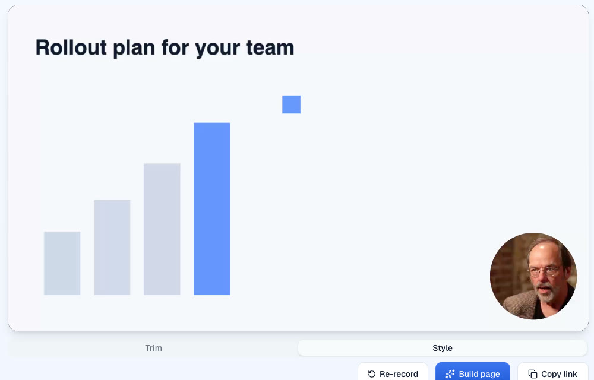
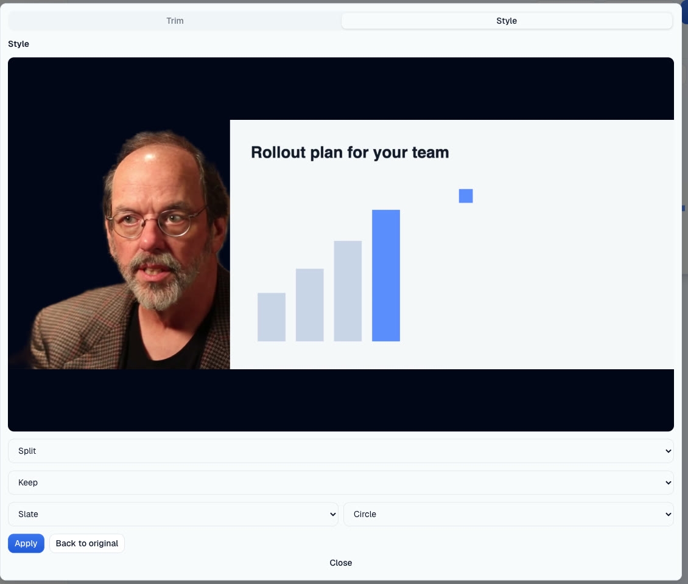

https://pr-1610.clarity-video.workers.dev at c58edaeca, 31 October 2026, headless Chromium on an Apple M4, talking-head fake camera, faked screen share. A 10 s take recorded as a camera bubble over the screen with the room kept, then restyled to Split with the room replaced by Slate.
The plate was attached 3 s after Stop: a 1920x1080 screen cell and a 960x540 camera cell, one recorded cut (bubble).

Apply rendered in the tab in 6 s, uploaded in 2 s, and was live 12 s after Apply. The take's playback id switched and the public share page serves the new one. This frame is Mux's own thumbnail of the new asset: the person cut out on Slate, the screen beside.
Back to original reverted in 1.5 s; playback returned to the original asset.

Test footage: frames from Ward Cunningham, Inventor of the Wiki, Wikimedia Commons, CC BY-SA 3.0. These screenshots are shared under the same licence.